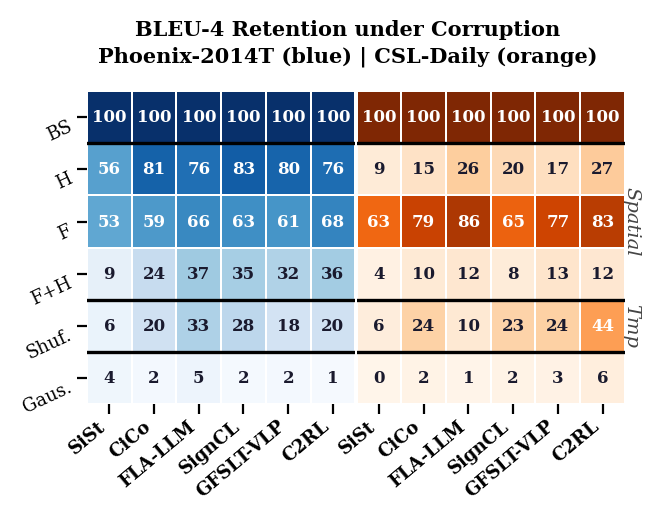
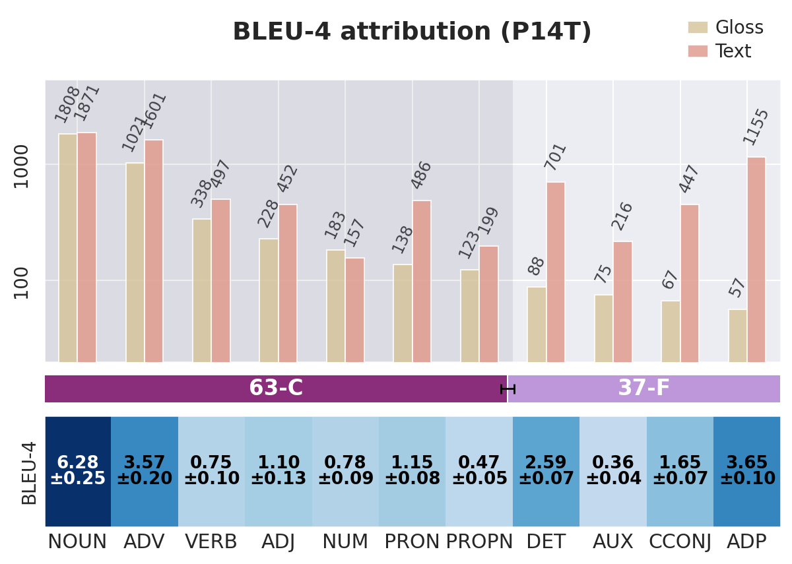
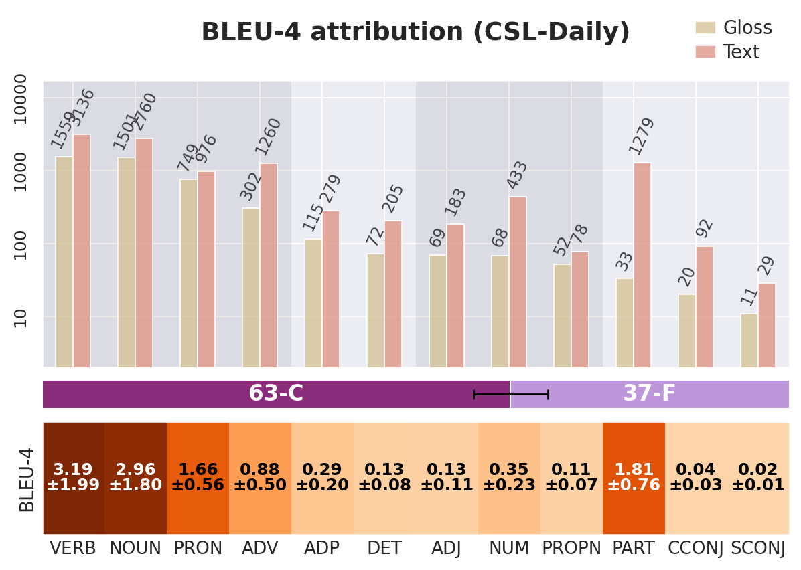
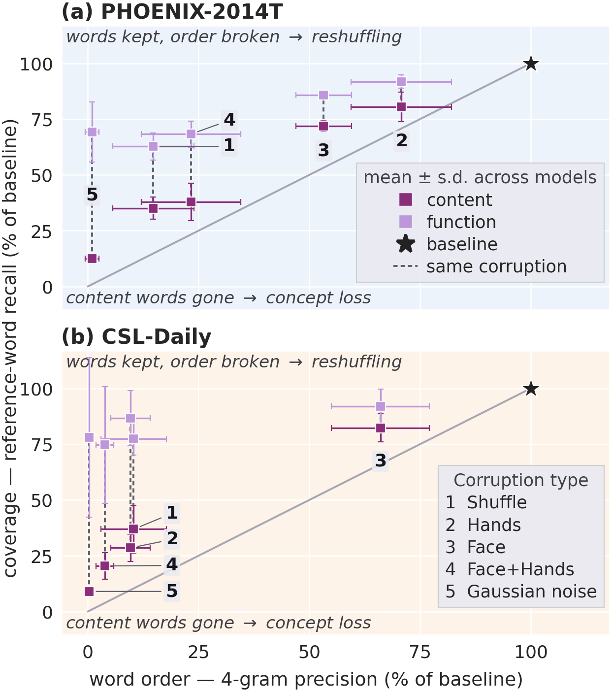
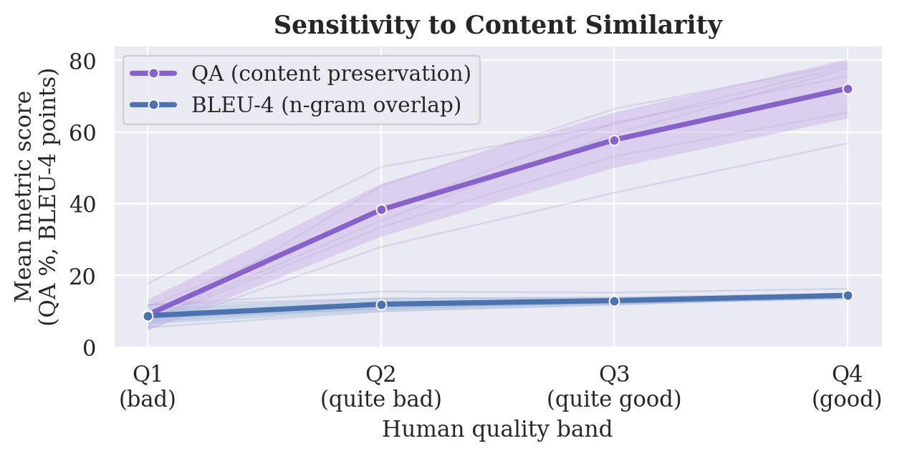
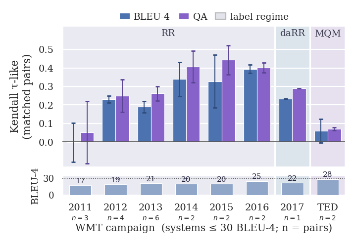
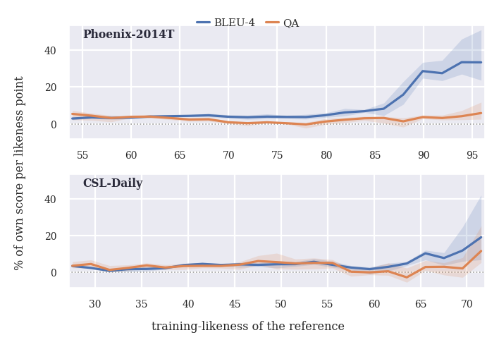
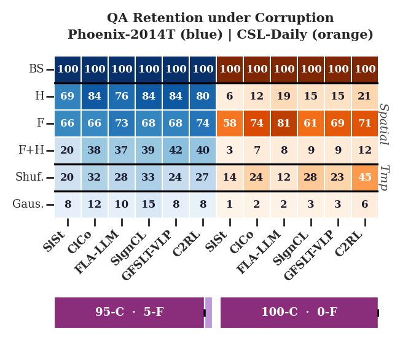

In multimodal translation, target-side metrics such as BLEU do not indicate whether an improvement reflects stronger visual understanding, better spoken-language modelling, or overfitting. Six systems reporting state-of-the-art results are evaluated across two benchmarks: the gloss-free GFSLT-VLP, Fla-LLM, CiCo, SignCL and C2RL, together with the single-stream (RGB-only) variant of the gloss-supervised TwoStream.
Replacing the visual representation with noise leaves every model at 1.2 BLEU-4 points or below, fixing the floor a system reaches while reading nothing. If the score were a true reflection of sign comprehension, masking the signer's hands and face or shuffling the frames should approach that floor. Retention stays well above it throughout. Masking a single articulator leaves most models above half their baseline: masking both hands leaves CiCo, SignCL and GFSLT-VLP at 81%, 83% and 80% of baseline on Phoenix-2014T, and masking the face leaves every model at 53–68% there and 63–86% on CSL-Daily.
These gaps matter because of their size relative to the margins in use. With both articulators masked, the five gloss-free systems retain 7.3±0.9 BLEU-4 points on Phoenix-2014T, close to three times the 2.5-point spread separating the six systems at baseline. What a model scores while reading none of the signing therefore exceeds the differences the field uses to rank systems, so a BLEU-4 gain at the current state of the art is not on its own evidence of better sign proficiency.

Signing encodes simultaneously and densely, using space for placement, depiction and constructed action, while many spoken-language grammatical elements are absent from it. No current annotation scheme offers a precise account of what is articulated in the sign space, but gloss may offer a first approximation. Pairing gloss and text part-of-speech distributions with the corresponding BLEU-4 attribution shows that, for both benchmarks and averaged over the six systems, 37% of BLEU-4 is attributable to function words that occur far less frequently in gloss than in text: German adpositions appear 57 times in gloss against 1,155 spoken tokens, worth 3.65 points, and Chinese particles 33 against 1,279, worth 1.81 points.
Function words are also what best survives corruption. Replacing the visual signal with noise leaves function-word recall at 69% of baseline on Phoenix-2014T and 78% on CSL-Daily, while content-word recall falls to 7–16%. This opens a channel for improvement without comprehension, where a system can raise BLEU-4 by modelling the target language better in the very category the signed source largely does not encode, indistinguishably from a gain earned by reading the signing. Nor is the channel narrow: it corresponds to approximately 8 BLEU-4 points on Phoenix-2014T against the 2.5 points that separate the six systems.


Output surviving corruption separates along two axes: whether it preserves the reference's words or only their order, and whether those words are content or function. The distinction matters because the two categories are not equally recoverable from target-side priors alone, since function words occupy a narrow, concentrated vocabulary while content words are broad and long-tailed. Two patterns hold in both datasets under every condition: coverage is retained better than 4-gram precision, and function-word coverage is retained far better than content-word coverage. What survives corruption is thus predominantly what target-side priors can supply, which is exactly what a metric rewarding explicit function-word forms is most exposed to.

Receptive assessment in early-stage sign language learning suggests a way to apply these perspectives: probe comprehension by querying the conveyed content, and assess whether the responses recover the salient information of the input. A metric of this kind should be invariant to wording at fixed content and sensitive to changes in the content itself.
Given a human reference translation r, the protocol builds a bank Qs of
quality-controlled multiple-choice questions and scores a model prediction s by the fraction of
Qs it can answer correctly from s alone, using an
open-weight LLM (qwen2.5-32b) served via vLLM.
Generation runs in three phases. To increase coverage, the LLM is prompted to extract all content units from r related to nine categories (entity, action, attribute, quantity, time, location, relation, negation, polarity). In phase two it is prompted to generate questions about each unit, so |Qs| scales with the reference's semantic density. In phase three, distractors are generated independently for each unit and question: four per question, each plausible but incorrect, mutually distinct, non-paraphrastic, and matched in language and register. The five options are deterministically permuted and a language-specific not stated sentinel is fixed in a sixth position, which lets the answerer decline rather than guess and floors the metric on non-equivalent content rather than at chance.
Three LLM-executed gates filter the assembled items. A round-trip gate requires the answerer, shown the reference itself, to select the correct option, since an item unanswerable from the reference cannot fairly be asked of a candidate. A world-knowledge probe presents the question with an empty passage and rejects items still answered correctly, removing those answerable from language priors alone. An ambiguity gate re-presents the reference, the question and the five content options in a separate pass, asks which of them the reference states or clearly implies, and rejects the item if more than one does. Candidates are then scored from the passage, question and options alone.
The metric can only penalise a candidate for content its questions probe, so reach is quantified as content coverage: the fraction of a reference's content lemmas that reappear in the QA items generated from it.
| Benchmark | Languages | References | Questions / ref. | Content coverage (%) |
|---|---|---|---|---|
| Signed | ||||
| Phoenix-2014T | 1 | 641 | 9.15 | 88.6 |
| CSL-Daily | 1 | 1,175 | 6.78 | 94.6 |
| Spoken | ||||
| WMT 2011–2024 | 5 | 15,938 | 12.1 | 92.8 |
| OpusParcus | 6 | 19,492 | 3.2 | 84.9 |
| PAWS-X | 7 | 13,862 | 11.1 | 95.0 |
QA yield and coverage, pooled over the languages of each benchmark. Question counts scale with sentence complexity as intended: the short colloquial subtitles of OpusParcus yield 3.2 questions per reference against 11.1 for the longer Wikipedia-derived sentences of PAWS-X.
The protocol is validated where human annotations are available, on four axes: paraphrase invariance (WMT19-P, WMT21-multiref), sensitivity to shifts in meaning from partial paraphrases (OpusParcus), sensitivity to flipped meaning under fixed wording (PAWS-X), and alignment with human system rankings over the WMT campaigns from 2011 to 2024.
| Benchmark | Statistic | BLEU-4 | QA |
|---|---|---|---|
| WMT19 (invariance) | SNR | 2.1 | 12.5 |
| WMT21 (invariance) | SNR | 3.1 | 23.0 |
| OpusParcus (graded) | Spearman ρ̄ | 0.28 | 0.55 |
| PAWS-X (inversion) | AUC | 0.61 | 0.83 |
SNR is the gap to the floor divided by the mean within-group fluctuation over meaning-equivalent groups, so higher means more invariant to wording. ρ̄ is Spearman correlation with human paraphrase-quality ratings. AUC is the probability that a true paraphrase outscores a meaning-flipped pair, averaged over the seven PAWS-X languages.
Each WMT group collects renderings of one source sentence that differ in wording but not content: one supplies the reference from which questions are generated, the rest are scored against it, and renderings of other sentences supply a floor. On WMT19 BLEU-4 fluctuates by 7.7 points against a 16.5-point gap, an SNR of 2.1, where QA reaches 12.5; on WMT21 the two are 3.1 and 23.0. The two collections differ in provenance, deliberate paraphrasing against independent translation, so their agreement is not a protocol artefact. Sensitivity is tested on OpusParcus, whose ratings are graded: QA tracks the human scale on average twice as closely as BLEU-4 in every language, rising from 9 to 72 across the four quality bands where BLEU-4 moves from 9 to 14.

PAWS-X pairs keep surface overlap high whether or not meaning is inverted, so lexical overlap is uninformative by design. Scoring one sentence of each pair against the other yields two populations of scores, one for true paraphrases and one for meaning-flipped pairs, summarised by ROC-AUC: the probability that a randomly drawn true paraphrase outscores a randomly drawn flipped pair. A metric blind to the inversion sits at 0.5 and one that separates the two populations perfectly at 1.0. QA performs better than BLEU-4 in all seven languages, 0.83 against 0.61. That QA still awards flipped English pairs 55.7% against 95.4% for true paraphrases is expected: PAWS-X alters one or two arguments, so most questions stay answerable.
Current text-only MT is near human performance, so its error profiles differ from those of SLT systems; restricting the WMT campaigns to systems averaging below 30 BLEU-4 gives a first approximation. QA matches or exceeds BLEU-4 in every campaign, though the intervals overlap in most. Separation is clearest in 2013–2015, where systems are weak enough for content transfer to differ between them but not so weak that both metrics floor.

Costs depend on deployment, so each stage is reported separately, measured on a single RTX 5090 with
qwen2.5-32b served under vLLM. Bank construction, encompassing content extraction, two
QA-generation passes and three quality-control gates, is the expensive stage at 22–24 minutes per
benchmark. Answering, one short-prompt call per admitted question, is up to an order of magnitude
cheaper, putting the recurring cost of evaluating an additional system at roughly
2–3 GPU-minutes.
Rerunning the generation pipeline does not necessarily reproduce a bank: roughly three-quarters of the admitted items recur between two banks, partly by design, since the second generation pass samples at a non-zero temperature. That variability does not carry through to the scores. Over ten end-to-end repeats, each regenerating content units, questions and answers against fixed system outputs, a system's QA accuracy moves by σ = 0.17–0.34 percentage points on Phoenix-2014T and 0.11–0.26 on CSL-Daily. Holding the bank fixed and bootstrap-resampling the test instances instead moves it by 2.4–2.7 and 1.4–2.0 points, between seven and sixteen times more for every system. Which questions get asked therefore matters far less than which sentences the test set happens to contain. A QA gap below roughly half a point is within run-to-run noise and should not be read as a difference between systems.
BLEU scores a test sentence higher when it resembles the training data, crediting recall of the training targets as though it were translation quality, and does so most where the training distribution is narrowest, which is the situation in SLT. Each test instance is characterised by a training-likeness ℓ, the character-level similarity between its reference and the closest training target. Within a sliding window over ℓ, the per-instance score is regressed on ℓ at fixed reference length, and the slope expressed as a percentage of that model's own mean score. Normalising this way is what makes the two metrics comparable, since BLEU-4 averages about 22 on Phoenix-2014T and QA about 56.
On Phoenix-2014T, BLEU-4 sits at 3.9% per likeness point over most of the range, below ℓ = 80, then rises eightfold to 32% for the most training-like sentences, where QA moves only from 2.4% to 6.5%. The exact copies, excluded from the curves, show the same asymmetry in levels rather than slopes: on the 31 references that occur verbatim in training, sentence BLEU-4 averages 52.5 against 21.4 elsewhere, a 2.4-fold jump, where QA averages 79.7 against 57.1, a 1.4-fold one. CSL-Daily reproduces the shape more weakly: over the top quarter of its likeness range BLEU-4 averages 8.4% per likeness point against 2.5% for QA, a 3.4-fold gap, where the Phoenix-2014T figures of 23.5% and 3.6% give 6.6-fold. The direction is the same in all twelve cases.

A retention percentage reflects content the corruption removed, word order it broke, and target-side structure it never touched, and the two results above indicate that the third term dominates for BLEU-4. Content words are harder to guess given their long-tailed distribution, but the share that survives pure noise shows they remain partly recoverable, so a content-oriented metric is not a fully closed channel, only a more transparent one. Since neither function-word scaffolding nor train-test overlap inflates QA, its retention can be read more directly: masking the hands leaves 64–80% of content transfer intact on Phoenix-2014T but only 4–16% on CSL-Daily, while masking the face leaves 62–70% and 40–68% respectively.

Relative to the published scores the ranking reorders substantially, but some of that is attributable to the reproduction gap, which is itself informative. The five gloss-free systems are evaluated from the checkpoints of Sincan et al., which brings them onto a common data pipeline, input resolution and evaluation protocol, and all six are decoded and scored through a single pipeline of our own. The reported column instead aggregates six independent training and evaluation setups, so the ours ranking is taken to be the like-for-like comparison. On identical predictions the two metrics agree closely: no system changes rank on CSL-Daily, and five of six move by at most one position on Phoenix-2014T, since transferring more content also reproduces more reference surface. The exception is Fla-LLM, sixth on BLEU-4 and third on QA.
| Model | BLEU-4 (reported) | BLEU-4 (ours) | QA (%) | Rank: BLEU-4 → QA |
|---|---|---|---|---|
| Phoenix-2014T | ||||
| C2RL | 26.8 | 21.2 ±2.2 | 52.6 ±2.6 | 5 → 6 |
| CiCo | – | 23.6 ±2.1 | 56.2 ±2.6 | 1 → 2 |
| Fla-LLM | 23.1 | 21.1 ±2.1 | 55.0 ±2.5 | 6 → 3 |
| GFSLT-VLP | 21.4 | 22.2 ±2.3 | 53.5 ±2.6 | 4 → 5 |
| SignCL | 22.7 | 22.7 ±2.2 | 53.8 ±2.6 | 3 → 4 |
| SingleStream (gloss-supervised) | 27.6 | 23.5 ±2.1 | 65.5 ±2.3 | 2 → 1 |
| CSL-Daily | ||||
| C2RL | 21.6 | 7.0 ±0.7 | 11.6 ±1.3 | 6 → 6 |
| CiCo | – | 12.0 ±0.8 | 27.1 ±1.8 | 3 → 3 |
| Fla-LLM | 14.2 | 16.9 ±1.0 | 41.2 ±2.1 | 2 → 2 |
| GFSLT-VLP | 11.0 | 10.9 ±0.9 | 22.7 ±1.7 | 4 → 4 |
| SignCL | 16.2 | 10.9 ±0.8 | 21.2 ±1.7 | 5 → 5 |
| SingleStream (gloss-supervised) | 25.8 | 28.2 ±1.4 | 61.6 ±2.1 | 1 → 1 |
Reported against reproduced performance, with QA content preservation. Intervals are 95% bootstrap over
test instances. QA is the pooled fraction of admitted questions answered correctly, from a bank generated
and answered by qwen2.5-32b. Rank columns order all six models by our reproduced BLEU-4
against QA.
QA accuracy ranges from 52.6 to 65.5% on Phoenix-2014T and from 11.6 to 61.6% on CSL-Daily. On Phoenix-2014T, the field's most reported benchmark, the five gloss-free systems fall within a span of just 3.6 QA points, and their per-system confidence intervals all overlap. CSL-Daily separates the same five over a span eight times wider. SingleStream, the one gloss-supervised system, stands apart from all five on both benchmarks, by 9.3 and 20.4 points, a gap invisible to BLEU-4, which ranks it second on Phoenix-2014T.
Preservation is partial at best: about two thirds of queried content for the gloss-supervised system on Phoenix-2014T, just above half for the gloss-free systems, and as little as a tenth on CSL-Daily, whose figures reflect total failures as much as partial transfer.
BLEU-4 rewards words a spoken-language decoder can supply without reading the signing: it survives occlusion of the articulators, commits a third of its credit to function words with few counterparts in the source, and favours systems that reproduce training-like targets. Each exceeds the 2.5-point spread separating the six systems we reproduce, so BLEU-4 differences at the current state of the art are not evidence of better sign understanding.
Asking instead what a translation conveys measures salient content preservation reliably and at scale, stable to within half a point across reevaluations at 2–3 GPU-minutes per additional system. It resists what inflates BLEU-4: 95% of its credit falls on content, it is markedly more paraphrase-invariant and inversion-sensitive, and on the least training-like tenth of Phoenix-2014T it retains 57% of its full-set value where BLEU-4 retains 12%. As SLT matures, content transfer will increasingly saturate and be replaced by more detailed benchmarks. Until then, we believe the field should focus on whether models are capable of recovering the salient, grounded content of the discourse.
@article{ranum2026beyondbleu,
title = {Beyond BLEU: A Case for Redefining Sign Language
Translation Benchmarks},
author = {Ranum, Oline and Fish, Edward and Hadfield, Simon
and Bowden, Richard},
journal = {arXiv preprint arXiv:2609.03734},
year = {2026},
}